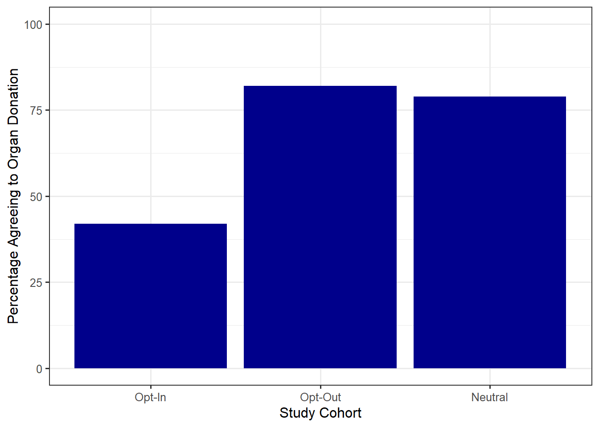

1 The Statistical Process
Is driving while texting as dangerous as driving while intoxicated? Is there evidence that my measurement device is calibrated inappropriately? How much force, on average, can our concrete blocks withstand before failing? Regardless of your future career path, you will eventually need to answer a question. The discipline of statistics is about using data to address questions by converting that data into valuable information.
Big Idea
Statistics is the discipline of converting data into information.
It might be natural at this point to ask “do I really need an entire class about answering questions with data? Isn’t this simple?” Sometimes, it is simple; other times, it can be far from it. Let’s illustrate with the following example from Tintle et al. (2015).
Example 1.1 (Organ Donation) Even though organ donations save lives, recruiting organ donors is difficult. Interestingly, surveys show that about 85% of Americans approve of organ donation in principle and many states offer a simple organ donor registration process when people apply for a driver’s license. However, only about 38% of licensed drivers in the United States are registered to be organ donors. Some people prefer not to make an active decision about organ donation because the topic can be unpleasant to think about. But perhaps phrasing the question differently could affect a person’s willingness to become a donor.
Johnson and Goldstein (2003) recruited 161 participants for a study, published in the journal Science, to address the question of organ donor recruitment. The participants were asked to imagine they had moved to a new state and were applying for a driver’s license. As part of this application, the participants were to decide whether or not to become an organ donor. Participants were presented with one of three different default choices:
- Some of the participants were forced to make a choice of becoming a donor or not, without being given a default option (the “neutral” group).
- Other participants were told that the default option was not to be a donor but that they could choose to become a donor if they wished (the “opt-in” group).
- The remaining participants were told that the default option was to be a donor but that they could choose not to become a donor if they wished (the “opt-out” group).
The study found that 79% of those in the neutral group, 42% of those in the opt-in group, and 82.0% of those in the opt-out group agreed to become donors.
The results of the study are presented in Figure 1.1. It seems obvious that using the “opt-in” strategy results in fewer people agreeing to organ donation. However, does the “opt-out” strategy, in which people are by default declared organ donors, result in more people agreeing to organ donation compared to the “neutral” strategy? On the one hand, a higher percentage did agree to organ donation under the “opt-out” (82% compared to 79%). However, since this study involved only a subset of Americans, is this enough evidence to claim the “opt-out” strategy is really superior compared to the “neutral” strategy in the broader population? The discipline of statistics provides a framework for addressing such ambiguity.
1.1 Overview of Drawing Inference
Let’s begin by taking a step back and considering the big picture of how data is turned into information. Every research question we pose, at its heart, is trying to characterize a population, the group of subjects of ultimate interest.
Definition 1.1 (Population) The collection of subjects we would like to say something about.
In the Organ Donation study (Example 1.1), the researchers would like to say something about Americans who are of the age to consent to organ donation; in particular, they would like to quantify how likely it is that someone from this group agrees to organ donation. Therefore, the population is all Americans who are of the age to consent to organ donation.
In general, the subjects (or units of observation) in a population need not be people; in some studies, the population could be a collection of screws, cell phones, sheet metal…whatever characterizes the objects from which we would like to obtain measurements. We use the phrase “like to” because in reality it is often impossible (or impractical) to observe the entire population. Instead, we make observations on a subset of the population; this smaller group is known as the sample.
Definition 1.2 (Sample) The collection of subjects for which we actually obtain measurements (data).
Note
Some readers may associate “subjects” with people; to avoid this confusion, you may prefer “unit of observation” to subject. In this text, we use subject to mean any unit on which observations could be taken.
For each subject within the sample, we obtain a collection of measurements forming our set of data. The goal of statistical modeling is to use the sample (the group we actually observe) to say something about the population of interest (the group we wish we had observed); this process is known as statistical inference (illustrated in Figure 1.2).
Definition 1.3 (Statistical Inference) The process of using a sample to characterize some aspect of the underlying population.

1.2 Anatomy of a Dataset
Once we have our sample, we take measurements on each of the subjects within this sample. These measurements form the data. When we hear the word “data,” most of us envision a large spreadsheet. In reality, data can take on many forms — spreadsheets, images, text files, unstructured text from a social media feed, etc. Regardless of the form, all datasets contain information for each subject in the sample; this information, the various measurements, are called variables.
Definition 1.4 (Variable) A measurement, or category, describing some aspect of the subject.
Variables come in one of two flavors. Categorical variables are those which denote a grouping to which the subject belongs. Examples include marital status, manufacturer, and experimental treatment group. Numeric variables are those which take on values for which ordinary arithmetic (e.g., addition and multiplication) makes sense. Examples include height, age of a product, and diameter. Note that sometimes numeric values are used to represent the levels of a categorical variable in a dataset; for example, 0 may indicate “No” and 1 may indicate “Yes” for a variable capturing whether a person is a registered organ donor. Therefore, just because a variable has a numeric value does not make it a numeric variable; the key here is that numeric variables are those for which arithmetic makes sense.
Definition 1.5 (Categorical Variable) Also called a “qualitative variable,” a measurement on a subject which denotes a grouping or categorization.
Definition 1.6 (Numeric Variable) Also called a “quantitative variable,” a measurement on a subject which takes on a numeric value and for which ordinary arithmetic makes sense.
While it may be natural to think of a dataset as a spreadsheet, not all spreadsheets are created equal.
Characteristics of Well-Structured Data
A well-structured dataset should adhere to the following characteristics:
- Each column contains a unique variable.
- Each record (row in the dataset) corresponds to a different observation of the variables.
- If you have multiple datasets, they should include a column in the table that allows them to be linked (subject identifier).
These characteristics ensure the data is properly formatted for an analysis. Even unstructured data such as images or text files must be processed prior to performing a statistical analysis.
Warning
We note the above description eliminates a common method of storing data in engineering and scientific disciplines — storing each sample in a different column.
To illustrate the above description, suppose we conduct a study comparing the lifetime (in hours) of two brands of batteries. We measure the lifetime of five batteries of Brand A and six of Brand B. It is common to see a dataset like that in Table 1.1; the problem here is that the first record of the dataset contains information on two different units of observation. We have the lifetime from a battery of Brand A in the same row as the lifetime from a battery of Brand B. This violates the second characteristic of datasets described above.
| Brand A | Brand B |
|---|---|
| 8.3 | 8.4 |
| 5.1 | 8.6 |
| 3.3 | 3.8 |
| 5.3 | 4.1 |
| 5.7 | 4.5 |
| 4.0 |
In order to adhere to the characteristics of well-structured data outlined above, we can reformat the data in Table 1.1 to that shown in Table 1.2. Here, each record represents a unique observation and each column is a different variable. We have also added a unique identifier.
| Battery | Brand | Lifetime |
|---|---|---|
| 1 | A | 8.3 |
| 2 | A | 5.1 |
| 3 | A | 3.3 |
| 4 | A | 5.3 |
| 5 | A | 5.7 |
| 6 | B | 8.4 |
| 7 | B | 8.6 |
| 8 | B | 3.8 |
| 9 | B | 4.1 |
| 10 | B | 4.5 |
| 11 | B | 4.0 |
It may take some time to get used to storing data in this format, but it makes analysis easier and avoids time spent managing the data later.
1.3 A Note on Codebooks
A dataset on its own is meaningless if you cannot understand what the values represent. Before you access a dataset, you should always review any available codebooks.
Definition 1.7 (Codebook) Also called a “data dictionary,” these provide complete information regarding the variables contained within a dataset.
Some codebooks are excellent, with detailed descriptions of how the variables were collected alongside appropriate units for the measurements. Other codebooks give only an indication of what each variable represents. Whenever you are working with previously collected data, reviewing a codebook is the first step; and, you should be prepared to revisit the codebook often throughout an analysis. When you are collecting your own dataset, constructing a codebook is essential for others to make use of your data.